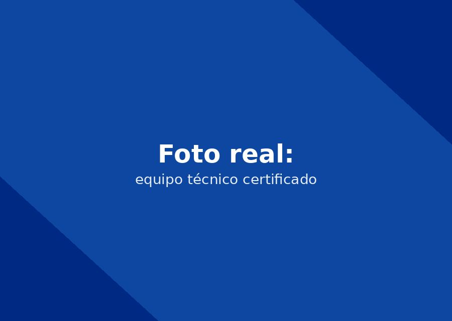

Limpieza de condensador, revisión de sellos y chequeo del sistema de refrigeración para evitar daños costosos.

Llame directamente o escriba por WhatsApp al mismo número para agendar su servicio técnico Mantenimiento Preventivo de Neveras en Cartagena. Respondemos en minutos.
☏ Escribir por WhatsAppEliminamos el polvo y la salinidad acumulada, la causa número uno de sobrecalentamiento de compresores en Cartagena.
Verificamos que las puertas sellen herméticamente para evitar la entrada de aire caliente y húmedo.
Inspeccionamos resistencia, bimetálico y timer para prevenir la acumulación de hielo.
Cambio de filtro y limpieza de líneas de agua cuando aplica.
Limpieza de condensador, revisión de sellos y chequeo del sistema de refrigeración para evitar daños costosos. A diferencia de una reparación de emergencia, este es un servicio que se agenda de forma preventiva o planificada, lo que nos permite llevar exactamente las herramientas y, cuando aplica, los repuestos originales que necesita el equipo específico de cada cliente.
Frecuencia y tiempo estimado: Recomendamos un mantenimiento preventivo completo cada 10 a 12 meses, y limpieza de condensador cada 6 meses en zonas cercanas al mar como Bocagrande o El Laguito.
El costo de este servicio varía según la marca y el modelo de su nevera o nevecón, por lo que siempre confirmamos el presupuesto por WhatsApp antes de agendar la visita —sin sorpresas ni cobros ocultos al finalizar. Si no está seguro de si necesita este servicio u otro, cuéntenos los síntomas de su equipo y le orientamos sin costo.
Sí, todas nuestras reparaciones incluyen garantía escrita sobre la mano de obra y los repuestos instalados.
El diagnóstico es gratuito cuando usted decide realizar la reparación con nosotros. Si solo requiere el diagnóstico sin reparación, consulte el costo por WhatsApp.
Cuéntanos la marca de tu nevera. Te confirmamos por WhatsApp en minutos.
☏ Escríbenos por WhatsApp